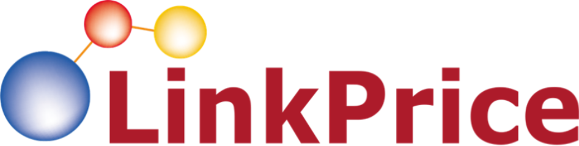

LINKPRICE · PERFORMANCE MARKETING
강금옥 쭈꾸미
마케팅 광고 운영 제안
검색에서 구매까지, 매출을 만드는 광고 운영 구조
네이버 검색광고네이버 GFAMeta 광고협력광고

LINKPRICE · PERFORMANCE MARKETING
검색에서 구매까지, 매출을 만드는 광고 운영 구조
01 · STRATEGY
구매 의도가 높은 고객은 검색에서 잡고, 아직 검색하지 않은 고객은 콘텐츠와 타겟 광고로 먼저 만납니다.
쭈꾸미·대창·밀키트 등 상품 검색어와 캠핑·안주·야식 등 상황형 키워드를 나눠 운영합니다.
네이버 GFA와 Meta에서 음식 콘텐츠에 반응할 가능성이 있는 고객에게 제품을 먼저 노출합니다.
방문·찜·장바구니 등 설정 가능한 고객군을 활용해 구매 전환을 유도합니다.
02 · NAVER SEARCH ADS
모든 키워드를 동일하게 운영하지 않고, 구매 목적과 탐색 단계에 따라 예산·입찰·소재를 다르게 관리합니다.
03 · NAVER REPORT REFERENCE
제공받은 2026년 8월·9월 키워드 리포트를 참고해, 식품 카테고리에서 확인해야 할 운영 포인트를 정리했습니다.
브랜드검색 캠페인의 클릭·전환매출이 포함되어 있어, 전체 전환매출을 유료 키워드의 효율로 그대로 해석하면 안 됩니다. 비용이 발생한 파워링크·쇼핑검색을 분리해 보는 것이 중요합니다.
쭈꾸미·대창·밀키트 등 직접 구매형 검색어와 캠핑·안주 등 상황형 검색어를 분리하고, 각 그룹의 구매 건수와 실제 구매매출을 기준으로 예산을 조정합니다.
출처: 제공된 네이버 키워드 광고 리포트(2026.09.01~09.30). 전환매출 합계에는 비용이 0원으로 표시된 브랜드검색 캠페인 데이터가 포함되어 있어 단순 합산 ROAS는 참고 지표로 사용하지 않았습니다. 해당 리포트는 유사 식품 카테고리 참고 자료이며 강금옥의 실적이 아닙니다.
04 · MONTHLY COMPARISON
월별 키워드 리포트에서 확인되는 규모를 비교하되, 브랜드검색 전환이 포함된 점을 고려해 전체 ROAS를 단정하지 않습니다.
출처: 제공된 네이버 키워드 광고 리포트(2026년 8월·9월). 노출·클릭·비용 합계 기준.
05 · NAVER GFA
상품을 아직 검색하지 않은 고객에게 음식 콘텐츠로 관심을 만들고, 상품을 확인한 고객에게는 구매 이유를 다시 전달합니다.
맛·양·조리 편의·활용 상황별 메시지
신규 고객과 스토어 반응 고객 분리
구매완료·구매매출·CPA 중심
성과 확인된 소재·타겟에 점진 확대
06 · META REPORT REFERENCE
제공된 2026년 9월 Meta 리포트에서 확인한 실제 집행 지표입니다. 식품 브랜드 운영 사례로 참고하고, 강금옥 성과와는 구분해 제시합니다.
프로모션 전환 캠페인이 전체 지출과 보고된 구매 전환값의 큰 비중을 차지했습니다. 상품·프로모션별 캠페인을 나누면 소재와 혜택의 기여도를 비교하기 쉬워집니다.
조리 영상, 완성 음식 비주얼, 캠핑·홈술 상황 콘텐츠를 테스트하고, 단순 클릭보다 구매완료 및 구매매출을 기준으로 유지·중단을 판단합니다.
출처: 제공된 Meta 성연령 리포트(2026.09.01~09.30). 구매·구매 전환값은 Meta 플랫폼 보고값이며, 실제 결제 데이터 및 다른 매체와의 중복 기여 여부는 별도 확인이 필요합니다. 리포트의 장바구니 전환값은 구매 전환값과 중복될 수 있어 구매매출로 합산하지 않았습니다.
07 · META PARTNERSHIP ADS
크리에이터의 실제 사용·추천 콘텐츠를 광고로 확장해, 브랜드가 직접 만든 광고와는 다른 친근함과 신뢰를 전달합니다.
실제 조리·시식·한 끼 활용 장면 중심
시청 유지·저장·댓글·링크 클릭 확인
파트너 권한 및 광고 사용 동의 후 확장
구매완료·매출·CPA 기준으로 조정
08 · FULL-FUNNEL
각 채널의 강점에 맞춰 신규 유입을 만들고, 검색 의도가 생긴 고객을 전환까지 이어갑니다.
음식 콘텐츠와 협력광고로
새로운 고객에게 도달
관심·방문 고객에게
상품 혜택과 구매 이유 전달
쭈꾸미·밀키트 등 검색 의도가
명확한 고객을 구매로 연결
09 · CREATIVE & PRODUCT
클릭을 늘리는 문구만으로는 부족합니다. 광고에서 기대한 혜택이 상품 페이지에서도 바로 확인되어야 합니다.
맛 — 매콤한 양념과 대창의 조합
편의 — 간편하게 완성하는 한 끼
상황 — 캠핑·홈술·집들이 메뉴
상품명과 첫 이미지에서 핵심 상품이 보이도록 구성하고, 조리법·중량·구성·보관법 등 구매 전 궁금증을 빠르게 해소합니다.
판매가와 쿠폰 적용가, 배송비·도착 예정일, 리뷰와 상품 문의를 점검해 광고 클릭 이후 이탈을 줄입니다.
10 · REPORTING & OPTIMIZATION
리포트는 결과 공유에서 끝나지 않습니다. 다음 주에 무엇을 유지하고, 줄이고, 새로 테스트할지 연결합니다.
구매 건수와 구매완료 매출을 우선 확인하고, ROAS·CPA·신규 고객 비중·마진을 함께 검토합니다.
플랫폼별 전환 기준과 어트리뷰션 차이가 있으므로, 매체 간 단순 합산보다는 동일 기준의 스토어 실적과 함께 해석합니다.
11 · ROADMAP
초기부터 예산을 무리하게 늘리기보다, 상품·키워드·소재·타겟별 반응을 확인해 성과가 검증된 영역부터 확장합니다.
검색어와 기존 성과 점검
키워드 그룹·소재·타겟 구성
전환 추적 기준 확인
저효율 검색어·소재 정리
구매가 발생하는 조합에 집중
상세페이지 개선 포인트 반영
성과가 확인된 키워드·타겟 확대
협력광고 추가 테스트
매출 규모와 수익성 함께 관리